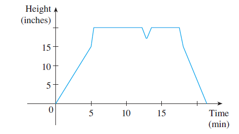

10 The graph shows the height of the water in a bathtub as a function of time. Give a verbal description of what you think happened.

Solution:
The person started filling the bathtub at time 0 and continued in a
steadily manner until 5 minutes later. The person enters the bathtub,
and due to the person’s volume on it, the water level increases rapidly
and stay the same until the person stand up or take some object out and
put it again. The person leaves the bathtub making the water level
decrease rapidly and started to drain the water out.